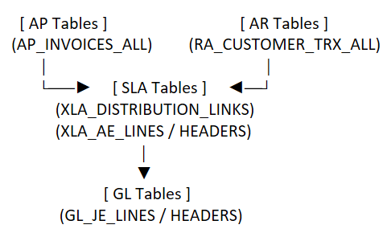

1. Core SQL & Technical Integration
- How do you structure complex SQL queries in Oracle Fusion to pull financial data across GL, AP, and AR tables?
Note: When building cross-functional Oracle Fusion Financials queries, typically use a layered architecture rather than joining GL, AP, and AR tables directly. The key is understanding that Subledger Accounting (SLA/XLA) is the bridge between AP/AR transactions and General Ledger.
In Oracle Fusion Cloud Financials does not link AP or AR transactional tables directly to the General Ledger (GL_BALANCES or GL_JE_LINES). Instead, all subledgers pass data through the SLA engine.

Ans: I structure complex Oracle Fusion financial queries using a layered design. I start with AP or AR transaction tables, use XLA/SLA as the accounting bridge, and then connect to GL journals. I prefer CTEs to separate transaction, accounting, and reporting logic. I also apply ledger and period filters early for performance and use the AP/AR → XLA → GL path for reconciliation and audit reporting.
- What specific adjustments are required when migrating legacy queries (such as NFPS queries) into
Oracle Fusion Cloud-compatible syntax?
Ans: When migrating legacy queries to Oracle Fusion Cloud, I need to adapt to the new data model and ensure compatibility with the SLA/XLA engine. This involves updating join conditions, modifying column names, and adjusting logic to align with the cloud schema.
- How do you write and debug PL/SQL code or custom data models for enterprise reporting?
Ans: I write and debug PL/SQL code for enterprise reporting by following a systematic approach. I start by understanding the business requirements and designing the logic accordingly. I use Oracle SQL Developer for debugging, leveraging its built-in debugging tools and execution plans. I also utilize logging and error handling mechanisms to identify and resolve issues efficiently.
- What performance tuning techniques do you apply to optimize long-running SQL queries in SQLDeveloper?
Ans: To optimize long-running SQL queries in SQL Developer, I analyze execution plans to identify bottlenecks, use indexing strategies, and rewrite queries for efficiency. I also consider partitioning large tables, using bind variables, and minimizing the use of subqueries or complex joins. Additionally, I monitor system resources and adjust database parameters as needed.
- When migrating legacy queries to Oracle Fusion Cloud, how do you handle subqueries, database views,
or legacy functions that are no longer supported in the Cloud database schema?
- How do you address Cartesian products or duplicate records when writing SQL queries that join
subledger tables (
AP_INVOICES_ALL, AR_PAYMENT_SCHEDULES_ALL) to GL tables
(GL_JE_HEADERS, GL_JE_LINES)?
- How do you handle multi-currency conversions or historical rate calculations in custom GL/AP SQL
data models?
2. Reporting & Automation (BI Publisher, OTBI, FRS, ESS)
- What is your step-by-step process for building a custom BI Publisher report, from designing the data
model to formatting template layouts?
- How do you evaluate whether a functional requirement should be built using OTBI versus BI Publisher?
- How do you set up and configure Enterprise Scheduler Service (ESS) jobs to automate report execution
and manage output distribution schedules?
- What role does Financial Reporting Studio (FRS) play in your reporting framework compared to OTBI?
- How do you implement bursting in BI Publisher for automated financial report delivery to specific
business users?
- What steps do you take when a BI Publisher report times out or exceeds the maximum memory threshold
during execution?
- How do you configure parameter triggers (such as
Before Report or
After Report triggers) in BI Publisher using PL/SQL packages?
- What are the key differences between subject areas in OTBI, and how do you handle cross-subject area
reporting when data doesn't naturally link?
3. Oracle Financials Functional Setup & Support (GL, AP, AR)
- What core configurations and setups have you managed within the Oracle Fusion General Ledger (GL)
module?
- How do transactional subledger entries from AP and AR flow into the General Ledger in Oracle Fusion
Cloud?
- How do you handle incident management, ticketing (via ServiceNow/JIRA), and Root Cause Analysis
(RCA) during Application Management Support (AMS)?
- What steps do you take during report validation and data reconciliations to guarantee data accuracy
for financial decision-making?
- Walk through the period-close process in Oracle Fusion Financials. Where do reporting analysts
typically get involved when financial statements do not balance?
- How do you configure Data Access Sets and Role-Based Access Control (RBAC) to ensure users only see
financial data for their assigned Business Units (BUs) or Ledgers in BI Publisher/OTBI reports?
4. Environment Management, SDLC & AI Certifications
- What is the structural difference between an MD50 (Functional Specification) and an MD70 (Technical
Specification) document within RICE development?
- How do you coordinate System Integration Testing (SIT) and User Acceptance Testing (UAT) with
functional teams prior to production deployments?
- How do you manage code and report migrations across different Fusion environments (e.g., from DEV to
TEST and Production)?
- How do you use Oracle Virtual Machines (VM instances) in your development and testing workflows for
report deployments?
- Based on your Oracle Fusion AI Agent Studio Certified Developer certification, how can AI
agents be leveraged to optimize standard Oracle Cloud ERP workflows?
5. Behavioral, AMS & Career Growth
- Can you give an example of how you used ServiceNow/JIRA to track an SLA breach risk and how you
communicated with business stakeholders to resolve it?
- You received an "Exceeding Expectations" rating in your first year at Capgemini. What specific
initiative or deliverable contributed most to that recognition?
- With a Computer Science degree background, what made you choose Oracle Fusion Techno-Functional
consulting, and how do you apply your core CS principles (data structures, algorithms) to enterprise
ERP reporting?